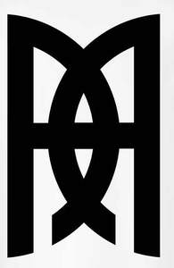

Trade Mark Journal No.2025/050 12 December 2025
UK00004305118 3 December 2025 (3,14,18,25,35)

- Class 3
- Perfume; Eau de parfum; Eau de toilette; Cologne; Fragrances for personal use; Non-medicated skin care preparations; Cosmetics; Body deodorants.
- Class 14
- Jewellery; Sterling silver jewellery; Gold jewellery; Gold plated jewellery; Necklaces; Bracelets; Rings; Earrings; Nose rings; Brooches; Pendants; Bangles; Precious metals and their alloys; Costume jewellery; Precious stones; Articles of jewellery coated with precious metals; Artificial jewellery; Artificial gemstones; Badges of precious metal; Jewellery charms; Jewellery chains; Tie pins; Tie clips; Cuff links; Fashion jewellery; Identity plates of precious metal; Key charms; Key rings and key fobs of precious metals; Medals; Ornamental pins; trinkets of precious metal; Cases for Jewellery; Watches; Wrist Watches; Straps for watches; Leather watch straps; Cases for Watches; none of the aforementioned goods being specifically designed for cycling or bicyclists.
- Class 18
- Leather bags; Travel bags; Travelling bags made of leather; Leather handbags; Leather Toiletry bags; Wash Bags; Leather Wash bags; Cloth handbags; Tote bags; Duffle bags; Duffel bags; Cross-body bags; Canvas bags; Carry-all bags; Sling bags; Clutch bags; Messenger bags; Leather wallets; Leather purses; Baggage; Travel Luggage; Suitcases; Leather Suitcases; Leather briefcases; Leather Luggage; Leather Luggage tags; Luggage label holders; Wheeled Luggage; Luggage trunks; Luggage leather straps; Luggage covers; none of the aforementioned goods being specifically designed for cycling or bicyclists.
- Class 25
- Clothing; Ready-to-wear clothing; Clothing of Leather; Clothing of Wool; Clothing of Cotton; Clothing of Denim; Clothing of Shearling; Outerwear; Overcoats; Underwear; Casualwear; Evening wear; Footwear; Hats; Caps; Articles of outer clothing; Articles of under clothing; Boxer Shorts; Knickers; Vests; T-shirts; Printed t-shirts; Embroidered t-shirts; Coats; Jackets; Leather jackets; Leather coats; Shearling jackets; Shearling coats; Sheepskin jackets; Sheepskin coats; Wool coats; Wool jackets; Puffer coats; Puffer jackets; Denim jackets; Denim coats; Parka coats; Parka jackets; Aviation Jackets; Dinner jacket; Smoking jacket; Padded coats; Padded jackets; Gilet; Fleece; Duffle coats; Duffel coats; Pea coats; Trench coat; Double- Breasted Coats; Double-Breasted Jackets; Single-Breasted Coats; Single-Breasted jackets; Fur Coats; Imitation Fur Coats; Bomber jackets; Duster Coats; Princess Coats; Capelet Coats; Capes; Reefer Coats; Bolero Jacket; Quilted Coats; Quilted Jackets; Blazers; Jeans and Pants; Denim Jeans; Denim Pants (trousers); Casual pants (trousers); Leather pants (trousers); Leather pants(trousers); Shirts; Trousers; Waistcoats; Suits; Shorts; Blouses; Cardigans; Sweaters; Sweatshirts; Hoodies; Socks; Skirts; Dresses; Mini Dresses; Midi Dresses; Maxi Dresses; Cocktail Dresses; Maternity Dresses; Jumpsuits; Evening Dresses; Bath robes; Dressing Gowns; Beachwear; Beach Shorts; Bikinis; Scarves; Ties; Dungarees; Braces; Leather Belts; Leather Shoes; Boots; Leather Boots; High-Heeled Shoes; Casual Shoes; Sandals; Slippers; none of the aforementioned goods being specifically designed for cycling or bicyclists.
- Class 35
- Retail and online retail services in connection with fashion and leisure clothing namely, outerwear, overcoats, underwear, casualwear, evening wear, footwear, hats, caps, beachwear, beach shorts, bikinis, articles of outer clothing, articles of under clothing, t-shirts, jackets, leather jackets, dresses, shirts, blouses, skirts, jeans and pants, travel bags, luggage, baggage, briefcases and jewellery; Wholesale services in connection with fashion and leisure clothing namely, outerwear, overcoats, underwear, casualwear, evening wear, footwear, hats, caps, beachwear, beach shorts, bikinis, articles of outer clothing, articles of under clothing, t-shirts, jackets, leather jackets, dresses, shirts, blouses, skirts, jeans and pants, travel bags, luggage, baggage, briefcases and jewellery; none of the aforementioned goods being specifically designed for cycling or bicyclists.
Hardeep Singh